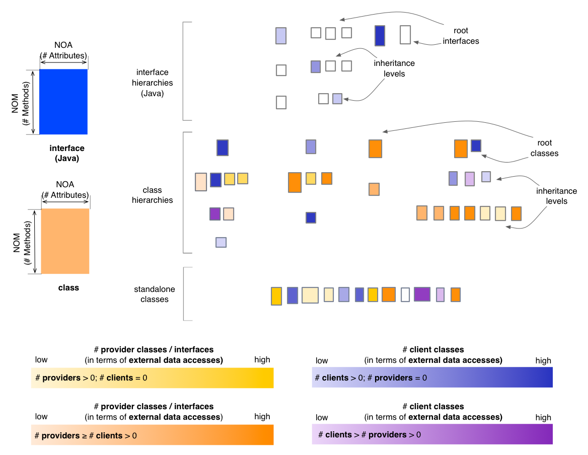
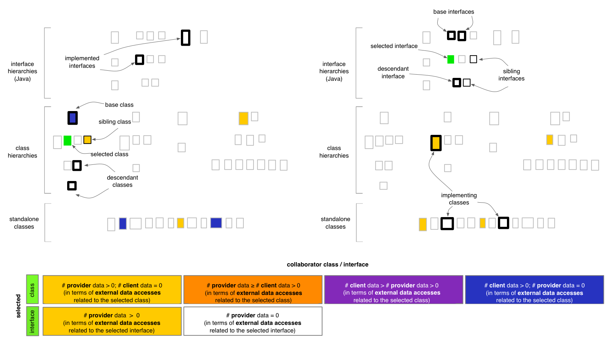

Inheritance Map - Encapsulation Perspective
The Encapsulation Perspective of the Inheritance
Map provides insight into the way classes and interfaces (Java)
expose their data to external clients. In the default state,
the Encapsulation Perspective will render classes and interfaces based
on
their predominant nature from the viewpoint of encapsulation, using
four color gradients:
- if a class or interface only accesses but does not
itself expose data (i.e. it is a
pure client), it is rendered in a shade of yellow
- if a class or interface both exposes and itself
accesses
data from other classes or interfaces, it will be rendered in
a color that depends on which aspect is predominant (i.e. mostly client
shown in a shade of orange, or mostly provider shown in a shade
of magenta)
- if a class or interface only exposes but does not itself
access data from other classes or interfaces (i.e. it is a
pure provider) it is shown in a shade of blue
In this context the term “exposes data” means that the class or
interface has data that is either declared public, or
accessible through a public accessor, and that there is at least one
other class that accesses this data, either directly or
through the provided accessor method. In other words, merely defining
data as public is not considered as “exposing” that data, unless there
is at least one client that actually accesses it.

Entity selection
The user may select a class or an interface in the map, in
which case the coloring of the map changes to reflect the encapsulation
from
the point of view of the selcted entity. The selected entity is colored
in green (with no borders). Its ancestors and
descendants are shown with a thickened black border and its siblings
are shown with a normal black border. Its collaborator classes and
interfaces are colored using
the four colors described below, based on their relation to
the selected class or interface. In case of the Encpasulation
Perspective, this relation is defined in terms of external data
accesses. If a class or an interface has no relation to the
selected entity, its coloring will be disabled.

Other quality perspectives
Complexity, Coupling,
Design Flaws, Inheritance
Metrics used
DIT (indirectly), NOA,
NOM